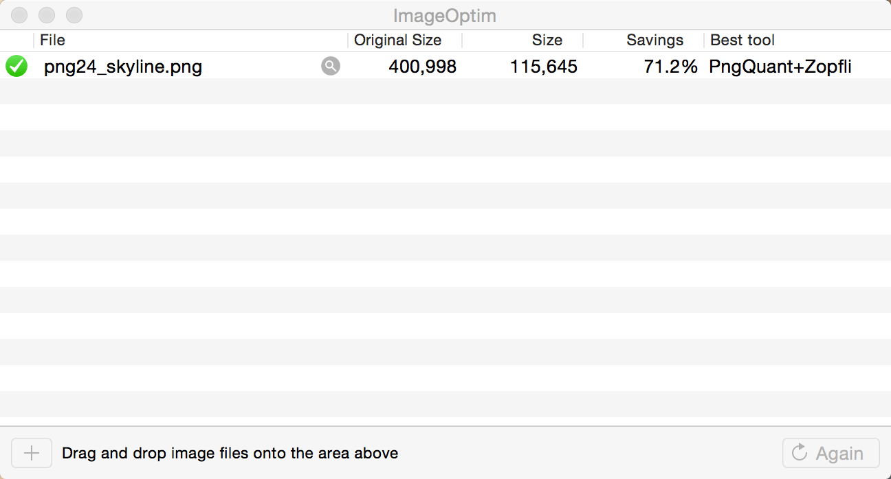
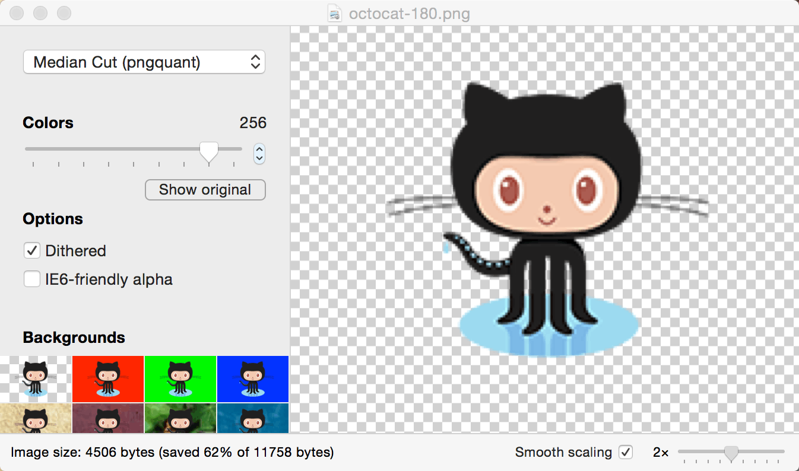

图片压缩那点事
关于图片压缩的技术和工具改进
Created by @John Wong
续：Iconfont改进
利用FontForge工具简化字形
| 资源 | 空工程 | 2x图 | 3x图 | 字体 |
|---|---|---|---|---|
| 工程体积 | 195 | 249 | 268 | 214 |
| 资源体积 | 0 | 54 | 73 | 19 |
比之前体积减小近一半。字体体积是2x图的35%，是2x+3x图的15%。
为什么要压缩
缩减应用体积

ImageAlpha+ImageOptim最优
压缩前的18.8% Xcode压缩的35.4%
提高加载速度
| Type | Xcode压缩 | 创建 | 显示 | 读取位图 |
|---|---|---|---|---|
| Xcode BGRA/CgBi | Enabled | 8.6s | 11.7s | 12.8s |
| ImageOptim | Disabled | 1.2s | 5.4s | 6.4s |
| ImageAlpha & ImageOptim | Disabled | 1.2s | 4.7s | 4.7s |
最有效的压缩方法
图片压缩对比
ImageOptim
- 优秀的无损图片压缩工具
- 支持PNG/JPEG/GIF
- 集成一系列压缩工具
- 支持拖拽操作和命令行
- 批量处理
压缩原理
- 优化压缩参数
- 移除无用元数据
- 移除不必要颜色配置
- 多个工具依次压缩取最小
ImageAlpha
- 图形化有损图片压缩工具
- 减少PNG文件大小并保留透明度通道
- 集成多个有损压缩工具
有损PNG原理
- 有损的Average滤镜
- PNG8
- Posterization
使用经验
- pngquant压缩最有效
- 256色满足大多数图片要求
改进ImageOptim
不足之处
- 操作两个工具实现最大压缩
- ImageAlpha手动保存图片
- ImageAlpha没有批处理
改进
- 加入pngquant
- 颜色使用经验值256
- 加入设置控制是否用pngquant预处理
注意事项
- 会修改原图，备份或置于版本控制下
- 有损压缩会失真，建议预览后再提交
选择PNG/GIF/JPEG
- GIF毫无优势
- JPEG一般比PNG要小
- 除了颜色较少/有锐利的边界/透明度